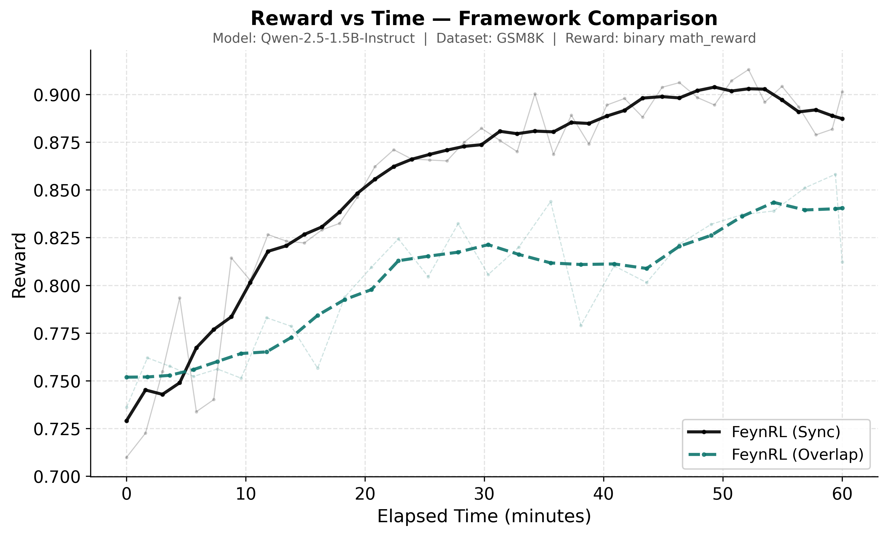
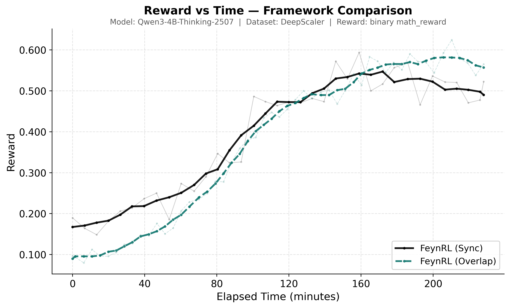

This page collects the current release results and is organized by experiment family.
Math
Qwen2.5-1.5B-Instruct

| Run | Pass@1 | Pass@16 |
|---|---|---|
| Baseline | 12.0% | 26.4% |
| FeynRL | 12.2% | 27.0% |
Qwen3-4B-Thinking-2507

| Run | Pass@1 | Pass@16 |
|---|---|---|
| Baseline | 12.2% | 19.7% |
| FeynRL | 27.0% | 40.2% |
Evaluation uses a shared verifiable math benchmark suite spanning GSM8K, AIME, AMC, AMO, Brumo, HMMT, and Olympiad-style sets, with pass@1 and pass@16 computed from 16 samples per prompt at temperature 1.0.
| Model | Training Data | Setup | Curve Snapshot |
|---|---|---|---|
| Qwen2.5-1.5B-Instruct | GSM8K | Dedicated sync vs overlap comparison with a 6/2 training-rollout GPU split. | At 1 hour, sync reaches 0.894 reward and async reaches 0.858. |
| Qwen3-4B-Thinking-2507 | DeepScaler Preview | Primary release run uses overlap; dedicated sync vs overlap comparison uses a 4/4 training-rollout GPU split. | At 4 hours, sync reaches 0.526 reward and async reaches 0.584. |